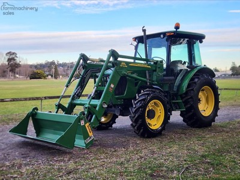
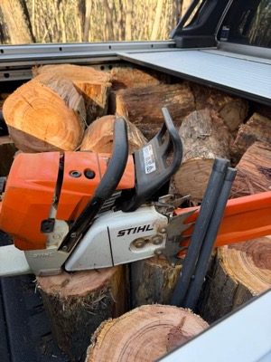
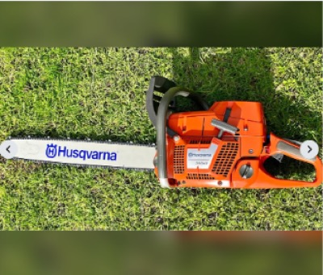
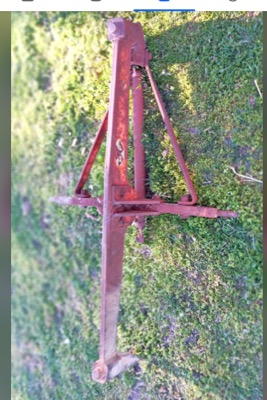
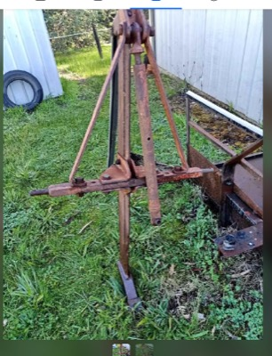
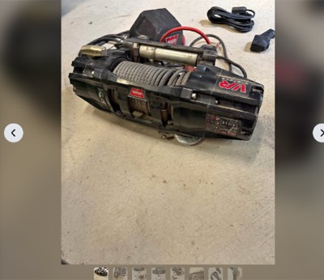
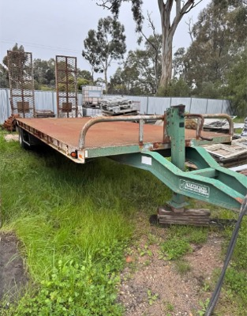
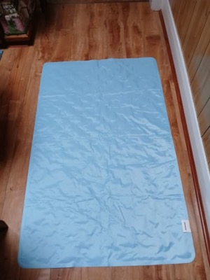

← home
what i build | agent's take | portfolio | agent picks | ai bellwethers | next fortnight | companies i love | gear i'm hunting | news | research log
Gear I'm hunting
last checked: 2026-10-10T13:51 (UTC)
Overnight sweep, 10 wants. The $800 Warn Zeon sold within 14 hours, which says the used Warn end of the winch market clears fast. A Stihl MS 461 at $1,000 in Werribee is now the cheapest 30in-capable saw on the list. The Pickles 2021 Kubota M108S loader at Mildura opens for bidding Monday morning and closes Tuesday evening. Everything else held at the same prices.
jump to: Tractor 90-140hp w/ loader | Portable home, 2 rooms + bathroom | Chainsaw, 30in bar | Offset discs 24-32 plate | Tree root ripper, single tyne | Winch for the Ranger | Mac mini M5 Pro/M6 32GB/1TB | Drop deck trailer | Dog cooling mat | 500L poly dog trough
Tractor, 90-140hp, with front-end loader
link
$15,000 to $80,000 · within 400km of Darlington Point, NSW
must have: front-end loader (FEL) included; 90 to 140 hp; under 4,500 hours; known manufacturer: John Deere, Case, Kubota, New Holland, Massey Ferguson, McCormick, Lovol or better
nice to have: non-AdBlue variant (not a deal breaker); cab over ROPS; service history
Build quality matters more than hours alone. A tidy 3,000-hour Deere beats a rough 1,500-hour no-name. Sweep the dealer used pages below as well as the auction and classifieds sites. farmmachinerysales.com.au blocks WebFetch and curl (403): open it in Chrome like Facebook, or skip it on a cloud run and say so in notes.

Kubota M9540 95hp 4x4 cab loader tractor, 4-in-1 — decent link
$65,000 · Moss Vale, NSW (500km)
2,230 hours · 95hp 4-cyl Tier 2 pre-emission · 18-speed with F/R shuttle · Kubota loader, Euro hitch, 3rd function, 4-in-1 bucket · cab with air seat, UHF · one owner ex-slashing tractor, recent service · Nokian all-terrain tyres, dealer can swap to ag tyres · dealer listing (Highlands Equipment)
Clears every must with low hours and a tidy one-owner history, but it is 500 km away and $65,000 is top of the band for 95hp.
Facebook Marketplace · first seen 2026-10-02
John Deere 5101 100hp 4WD cab loader tractor with 4-in-1 bucket — decent link
$65,000 (plus GST ($71,500 inc GST)) · Moss Vale, NSW (500km)
4,270 hours showing · 101hp JD 4045 4-cyl, mechanical fuel pump, no emissions gear · 16/16 PowrReverser with shuttle · JD 563 quick-release FEL, 3rd function, joystick, Euro hitch, 4-in-1 bucket · 4WD, difflock, 2 rear SCV sets · year not stated · dealer: Equipment Sales Pty Ltd, Lytton Rd, by appointment
Simple non-emission 100hp Deere with a proper 563 loader at $71,500 inc GST, but 500 km away and 4,270 hrs is close to the ceiling.
Farm Machinery Sales · first seen 2026-10-10
2021 Massey Ferguson 1204 4WD cab with FEL — decent link
$65,000 ($71,500 inc GST; confirm with seller if additional costs apply) · NSW, suburb not stated
1,278 hours · 120hp (88.2 kW) · front end loader listed · cab with air conditioning · 2021
Low hours and in band at $71,500 inc GST, but the suburb is still not stated so distance is unknown.
Machines4u · first seen 2026-10-08
2021 Kubota M108S with loader (Pickles National Agricultural Online, lot 27) — decent link
price TBC (online auction, bidding opens 12 Oct 09:00 AEDT; processing fees apply (pickles.com.au/fees/industrial); GST not stated) · Mildura, VIC (390km)
3,621 hours (from Pickles search listing) · listed as Tractor / Loader; loader model not stated on page · hp not stated on page · bidding not yet open: page says Item Not Yet Available for Sale · viewing by appointment only, 1300 052 392 · payment due within 24 hours of close, collection within 3 business days
Right size, right distance, hours under the cap, but no bid yet and thin on detail; worth a phone inspection enquiry before Monday.
Pickles · ends 2026-10-13 · first seen 2026-09-28- 2021 Deutz-Fahr 4080.4E cab 4WD with factory 4-in-1 FEL — stretch link
$47,500 · Harcourt North, VIC (370km)
960 hours · hp not stated · factory-fitted 4-in-1 FEL, Euro hitch, hay forks included · air-conditioned cab, 15 gears, shuttle · two owners, selling due to move · relisted 11 Oct, same price · mulcher mower available for $50,000 the pair
Cheap, new and low-houred, but the seller never states hp and the 4080 is likely under 90hp.
Facebook Marketplace · first seen 2026-10-10
- 2002 John Deere 6310 SE MFWD with JD 640 FEL — stretch link
$65,000 (negotiable, not subject to GST) · Dubbo, NSW (400km)
5,180 hours · hp not stated · JD 640 FEL plus Challenge bag loader and hay forks · second owner since 2014, serviced annually by H&P John Deere Dubbo · one new rear tyre · listed 5 days ago
Well-kept dealer-serviced Deere, but 5,180 hrs is over the cap and $65,000 is a lot for a 2002.
Facebook Marketplace · first seen 2026-10-10
recently gone: 2011 Deutz-Fahr Agrofarm 420 with CRX360 Plus loader, 232 hours at $61,500 (inc GST, dealer (Midstate Machinery Brokers)) (gone); 2013 John Deere 5090R (ex lease), 1,053 hours at $23,300 (auction closed 7:00pm AEDT 8 Oct; final bid not shown on the page; last bid read was $23,300) (sold); 1997 John Deere 6210 MFWD, cab, Burder front-end loader at $35,000 (sold); Massey Ferguson 5440 Dyna-4 4WD at $36,990 (reduced from $39,990 (was $37,750 on the last check)) (gone); Kubota M5101, 700 hours at $60,000 (plus GST) (sold)
Portable home, container or similar, 2+ rooms with bathroom
link
$5,000 to $30,000 · within 400km of Darlington Point, NSW
must have: bathroom; at least 2 rooms
nice to have: kitchen or kitchenette; container-based or relocatable build; ready to transport
Price band tracks quality: 5k for a rough site hut, 30k for a finished container home. Transport cost is worth noting separately.

Transportable cabin / granny flat, 8m x 3.2m — strong link
$7,000 (open to offers; listing shows reduced from $20,000) · Deniliquin, NSW (170km)
kitchen and living · bedroom with ensuite · 8m x 3.2m · used, fair condition · buyer to remove, seller can organise transport · open to offers
Cheapest unit that clears every must, 170km away and the seller is open to offers; condition is fair so inspect before paying.
Facebook Marketplace · first seen 2026-09-30
Expanding container cabin, 2 bed, full bathroom, base unit (new) — strong link
$19,990 (plus GST if applicable) · Cobram, VIC (180km)
2 bedrooms · full bathroom, plumbed ready to connect · expands to 5.9m x 6.2m · new, in stock, inspection welcome · electrical not included · dealer: GV Containers and Haulage, free delivery within 30km of Cobram
New two-bed with full bathroom from a dealer 180km away, in stock and inspectable; GST may push it toward $22k.
Facebook Marketplace · first seen 2026-09-30
New expanding container cabin, 2 bed, bathroom, kitchen — strong link
$22,990 (plus GST if applicable) · Cobram, VIC (180km)
2 bedrooms · full bathroom · L-shaped kitchen cabinets, stainless sink, mixer tap · expands to 5.9m x 6.4m · double glazed windows · electrical and plumbing ready for connection · new, in stock, inspection 7 days
Same Cobram dealer, premium model with the kitchen fitted; clears every must and every prefer at 180km.
Facebook Marketplace · first seen 2026-09-28
20ft expandable home, 2 bed, kitchen, living, toilet, shower — decent link
$20,000 · Whittlesea, VIC (370km)
2 bedrooms · kitchen · living room · toilet and shower · 20ft expandable · used, like new · view in Whittlesea
Clears every must at $20,000 but it is 370km out and the ad gives no dimensions or make.
Facebook Marketplace · first seen 2026-10-10
Unused expandable 2-bed container house with ensuite and kitchenette — decent link
$22,000 (current price, 0 bids, reserve applies, plus 8% buyer premium and admin fee) · Shepparton, VIC (230km)
2 bedrooms · ensuite: shower, toilet, sink · small kitchenette · about 19ft x 20ft opened out · ships 5950 x 2200 x 2515mm, about 3945kg · unused, model L0206-BR2 · sold unwired · no delivery, collection by appointment
Unused two-bed with ensuite 230km away, but $22,000 plus 8% lands near $23,800 before transport and wiring, and no bids yet means the reserve is untested.
Grays · ends 2026-10-15 · first seen 2026-10-10
Expandable container home, living, kitchen, bedroom, bathroom — decent link
$28,000 (disconnect and fold-up for transport is $1,000 extra; transport at buyer's cost) · Junortoun (Bendigo), VIC (330km)
living room · kitchen with cabinets and sink · double bedroom with fold-out wall to make two · bathroom: vanity, shower, toilet · 6.6m x 5.7m fully open, container size folded · LPG instant hot water, 6 months old · electrical upgraded to Australian spec · fold-up for transport an extra $1,000, transport at buyer cost
The most finished unit on the list with Australian-spec wiring and hot water, but $28,000 plus $1,000 fold-up plus transport from 330km puts it at the top of the band.
Facebook Marketplace · first seen 2026-10-02
recently gone: Unused expandable 2-bedroom container house with ensuite at $6,400 (auction closed 14:00 AEST 30 Sep; Lloyds shows the result as Not for Publication; last seen bid $6,400 plus 16.5% premium) (gone); Cabin on skids, 7.4m x 3.4m, bathroom, kitchen, bedroom and bunk room at $9,000 (heading says $8,000, asking $9,000; open to offers implied) (sold); 13m tiny home, 2 bedrooms at $16,000 (sold); Relocatable home/cabin, 2 bedroom, 10m x 6m at $25,000 (buyer to remove; moves in 2 sections of 10m x 3m) (gone); Unused expandable 2-bedroom container house with ensuite at $4,000 (auction closed about 15:13 AEST 30 Sep; Lloyds shows the result as Not for Publication; last seen bid $4,000 plus 16.5% premium) (gone); Ausco modular building 12.0 x 3.0m, bedroom, bathroom, kitchen at $4,200 (last seen bid; auction closed 29 Sep after 174 bids, closing price not shown) (sold); Portable living quarters on skids, 3.6m x 9m at $20,000 (sold)
Chainsaw, Stihl or Husqvarna, 30 inch bar capable
link
$500 to $2,000 · within 100km of Melbourne, VIC
must have: Stihl or Husqvarna; rated to carry a 30 inch bar (e.g. Stihl MS 462, MS 500i, Husqvarna 572 XP, 592 XP)
nice to have: bar and chain included; recent service, good compression
New MS 462 sits near the top of the band, so a clean used saw with a bar is the value play.

Stihl MS 461, full service kit, Egan muffler — strong link
$1,000 · Werribee, VIC (30km)
Full service kit fitted, ready to go · Egan straight-shot muffler (aftermarket) · Two extra chains, bar length not stated · Listed 23 Sep, pickup only
Cheapest 30in-capable saw found at $1,000 and 30km away; ask about bar length and the muffler mod before driving out.
Gumtree · first seen 2026-10-10
Stihl MS 462 C, 20in bar — strong link
$1,100 · Wollert, VIC (25km)
20in bar, chain near new · Used - like new, test run offered on pickup · Relisted 7 hours ago, seller rated 9
Cheapest MS 462 in Melbourne at roughly half RRP, 25km away, still live after a fresh relist.
Facebook Marketplace · first seen 2026-10-10
Stihl MS 500i, 25in light bar — strong link
$1,200 · Chadstone, VIC (15km)
Good compression, runs strong · 25in light bar · No inner spike · Seller rated 39, highly rated
Fuel-injected 500i with a 25in bar for $1,200, 15km from the CBD; the best power-per-dollar on the list.
Facebook Marketplace · first seen 2026-10-08
Stihl MS 461 Magnum, 20in bar — strong link
$1,200 · Wallan, VIC (55km)
20in bar · Owner moved to a 661 five years ago · Used - Good, relisted 9 hours ago
Honest one-owner 461 at $1,200 with a bar; a 30in bar is a $150 add.
Facebook Marketplace · first seen 2026-10-10
Stihl MS 461 Magnum, just serviced — strong link
$1,275 · Wonga Park, VIC (40km)
Low hours, just serviced, cleaned and inspected · Filters, plug, fuel tank, oil pump, clutch all checked · Same seller cross-posts on Gumtree at $1,295 with a 20in Rollomatic bar
The best-documented service on the list for $1,275; pickup is Wonga Park, about 40km.
Facebook Marketplace · first seen 2026-09-28
Husqvarna 390 XP, new 24in bar — strong link
$1,400 · Launching Place, VIC (60km)
88cc, recently serviced · New 24in bar and chain · Price firm, seller ignores offers · Listed 6 weeks ago, seller rated 30
Only clean Husqvarna big-bore saw inside 100km; serviced with a new 24in bar at $1,400, no haggling.
Facebook Marketplace · first seen 2026-10-10
recently gone: Husqvarna 395 XP with spare bar and chain, 25in speed tip bar at $1,200 (sold); Stihl MS 462, 63 hours, ex-government at $1,250 (down from $1,400; description prices powerhead $1,400 and $1,500 with a 20in or 25in bar, so confirm whether $1,250 includes a bar) (sold); Stihl MS 661C Magnum at $1,200 (firm) (gone)
Offset discs, 24-32 plate, for a 90-130hp tractor
link
open on price · within 400km of Darlington Point, NSW
must have: 24 to 32 plates; maximum 3.0 to 3.5 m working width; matched to 90-130 hp
nice to have: bearings in good order; plates with life left, not dished out; local within 400km, or an overseas maker that ships to Australia
Width is the hard constraint: anything over 3.5 m is too much for the tractor and too wide to cart. Overseas makers (e.g. made in China, Italy, Turkey, Brazil) count if they ship to Australia: quote price plus freight and import costs.

Shearer 300 24-plate trailing offset disc — decent link
$5,500 (ONO, was $6,000) · Wharparilla, VIC (250km)
24 plates · 2.4m working width · new 22in scallop discs on front gang · new front gang bolt · listed 6 weeks
Cheapest proper unit on the list with fresh front discs, but 2.4m is narrow and hp match is not stated.
Facebook Marketplace · first seen 2026-09-30
Blue Line 28-plate offset disc, new bearings and ram seals, width not stated — decent link
$7,500 (was $13,500) · Griffith, NSW (40km)
28 plates, heavy duty · new lift ram seals · new wheel bearings · disc gang bearings replaced as required · width not stated · listed 5 weeks
Closest find at 40km with the bearing work done; worth a look in person to measure width and plate wear.
Facebook Marketplace · first seen 2026-09-28
Heavy duty Australian made 24-plate offset discs — decent link
$7,700 (negotiable, includes GST, was $8,800) · Orange, NSW (390km)
24 plates · 2.5m cut · front gang of 12 discs just replaced with new bearings, receipt over $5,000 · rear discs about 60% · hydraulic lift, truck tyres · seller says needs at least 90hp
Clears the must list with recent front-gang work, but it is at the edge of the range and rear plates are half worn.
Facebook Marketplace · first seen 2026-09-30
Baldan CRSG28 28-plate offset trailing discs — decent link
$8,000 · Myrtleford, VIC (330km)
28 plates · about 2.4 tonne · oil bath bearings, owned since new · plates worn, seller quoted $135 ex GST per new plate · RHS bar added at rear for rollers · width not stated
Sound frame and bearings from a one-owner set, but budget for new plates on top of the $8,000.
Facebook Marketplace · first seen 2026-10-10
Jarrett 28-plate offset discs — decent link
$9,000 (ONO; page today shows the price as US$9,000, seller text says $9000 ono) · Katamatite, VIC (180km)
28 plates · hardly used, excellent condition · width not stated · no bearing detail
Low-hours 28-plate within 200km, but the listing is thin and the price display needs confirming with the seller.
Facebook Marketplace · first seen 2026-10-10
John Shearer 24-plate heavy duty offset disc — decent link
$9,500 · Undera, VIC (240km)
24 plates, heavy duty · hydraulic lift · hoses and tyres maintained, greased before every use · condition listed as like new · width not stated · listed 9 weeks
Well-kept unit but the dearest 24-plate on the list and width is not stated.
Facebook Marketplace · first seen 2026-10-10
recently gone: Armstrong WCH 24-plate heavy offset disc at $7,250 (sold)
Tree root ripper, ideally a single deep tyne
link
open on price · within 400km of Darlington Point, NSW
must have: built for ripping tree roots: heavy shank, deep rip, not a general tillage or chisel ripper; matched to 90-130 hp
nice to have: single tyne; 3-point linkage; shear-bolt or spring release protection; replaceable points and shin; local within 400km, or an overseas maker that ships to Australia
One deep, heavy tyne pulls deepest for the horsepower and is what root ripping needs; multi-tyne tillage rippers are out. Overseas makers (China, Italy, Turkey, NZ etc.) count if they ship to Australia: quote price plus freight and import costs, and mark distance as overseas.

Farm-Aid FA106 heavy duty single-tine ripper (new) — strong link
$1,145 (inc GST, freight extra, delivery Australia-wide) · Coopers Plains, QLD (ships)
single tine · 150 x 50 mm billet shank · 700 mm working depth · suits 60 hp and up · 3-point linkage · new, dealer stock, Farm Supplies 07 3085 2777
Cheapest new heavy-shank single tyne that clearly suits a 90-130 hp tractor; still $1,145 today, freight to Darlington Point to be quoted.
Pipeliner (Farm Supplies) · first seen 2026-10-10
Linkage single-tyne ripper, North Yalgogrin — decent link
$250 (reduced from $350) · West Wyalong, NSW (100km)
single tyne · 3-point linkage · used, good · ripper tip bent · located North Yalgogrin
Closest unit to home at $250, but the bent tip needs a look and no hp or shank size is given.
Facebook Marketplace · first seen 2026-10-02
Single-tyne 3PL ripper, Limerick — decent link
$250 · Limerick, NSW (380km)
single tyne · 3-point linkage · used, good · described only as a dingy 3PL ripper · listed 6 days ago
Cheap single tyne but thin on detail and 380 km away; unchanged since last run.
Facebook Marketplace · first seen 2026-10-10
Massey Ferguson single-tyne deep ripper, 3PL (two available) — decent link
$270 ($270 each, sold separately) · Crookwell, NSW (390km)
single tyne · 3-point linkage · two units: one lighter 1.4 m with top link, one heavy-duty large solid frame · heavy one has some rear-frame damage, still works · pick-up Crookwell
The heavy-frame unit is the pick at $270, but it has frame damage and is 390 km away.
Facebook Marketplace · first seen 2026-10-08
Massey Ferguson single-tine ripper, 3PL — decent link
$350 ($350 firm) · Bendigo, VIC (310km)
single tine · 3-point linkage · heavy A-frame with cross-bar · used, good working condition · listed 15 weeks ago
New today: a solid-looking MF single tine at $350, closer than the Crookwell pair and without the frame damage, but no hp or depth stated.
Facebook Marketplace · first seen 2026-10-10
recently gone: Massey Ferguson single-tyne deep ripper, 3PL (two available, sold separately) at $350 ($350 each, two rippers listed) (gone); Hayes pipe ripper and layer, 3PL at $750 (sold)
Winch for the 2013 Ford Ranger dual cab with ARB bullbar
link
open on price · within 100km of Melbourne, VIC
must have: 12V electric, low-mount, 9,500 to 10,000 lb: ARB rates the PX Ranger Summit bar for low-mount winches up to 10,000 lb (12,000 lb only if the bar is confirmed to take it); fits the standard 10in x 4.5in mount pattern, control box that mounts behind the bar or remotely; complete: winch, control box, remote, rope and hook
nice to have: synthetic rope over steel cable; known brand: Warn, ARB Intensity, Runva, Carbon, Ironman, TJM, Bushranger; wireless remote; fairlead to suit (hawse for synthetic)
Small enough to post, so listings elsewhere in Australia with shipping count as decent. Check the bar first: Summit or Deluxe, and the winch version rather than the non-winch cover panel. ARB names Warn, Magnum, Bushranger and Smittybilt low-mount winches for the Summit.
- Warn VR Evo 10-S, like new, factory fitted, never used in anger — strong link
$900 (Was $1,000; seller says price is fair and firm) · Tatura, VIC (170km)
10,000 lb (VR Evo 10-S) · synthetic rope (S model) · factory fitted, driveway test runs only · VR Evo ships with control pack, wireless and wired remote, hawse fairlead and hook; seller does not itemise them · listed 2 weeks ago; 170 km but small enough to post
With the $800 Zeon gone this is the best unit on the board: a like-new 10,000 lb synthetic Warn at $900 against roughly $1,400+ new, and it can be posted.
Facebook Marketplace · first seen 2026-10-10

Warn Magnum 10k with remote, working, good condition — decent link
$380 (Was $450) · Melbourne, VIC (20km)
10,000 lb (Warn Magnum 10k) · has remote, working · used, good condition · rope type, control box and fairlead not stated · seller is a parts trader; suburb not stated; listed 5 weeks ago
Cheapest Warn 10k on the board at $380, but the listing is thin: no rope, control box or fairlead detail, so it needs a call to confirm it is complete.
Facebook Marketplace · first seen 2026-09-28
Warn Magnum 10k, complete setup, genuine Warn remote — decent link
$700 (Was $800) · Melbourne, VIC (20km)
10,000 lb (Warn Magnum 10000) · complete setup, all parts, ready to bolt on · genuine Warn remote · used, like new; rope type not stated (Magnum 10k is normally steel cable) · suburb not stated; listed 5 weeks ago
Complete Warn Magnum 10k with remote at $700 is fair, but rope type and suburb are not stated and it has sat five weeks.
Facebook Marketplace · first seen 2026-09-30
Warn VR EVO 10, steel cable, wireless remote, ARB fitted, never used — decent link
$800 · Adelaide, SA (730km)
10,000 lb (VR EVO 10) · steel wire rope, not synthetic (visible in photos) · wireless hand controller included · bought new from ARB and fitted, never used · control box and fairlead not itemised in listing · listed Adelaide, would need posting
Unused Warn VR EVO 10 with wireless remote at $800 is good money, but it is steel cable and 730 km away so it only works if the seller will post it.
Facebook Marketplace · first seen 2026-10-10
Runva EWL9500 12V, synthetic rope, wired and wireless remote (new) — decent link
$815 (Free metro shipping) · Online (ships)
9,500 lb (4,309 kg) · 10 mm x 25 m Dyneema synthetic rope · 3.7 m wired remote plus wireless remote · control box, cables and brackets included · 2-in-1 aluminium hawse fairlead · 254 x 114.3 mm mount, 4 x M10
Cheapest new complete 9,500 lb synthetic kit with both remotes at $815 delivered; it is the fallback if the used Warns go.
4x4 Down Under · first seen 2026-09-30- TJM TORQ 9,500 lb, brand new in box, synthetic rope — decent link
$1,000 · Burwood, VIC (20km)
9,500 lb (TJM TORQ, part 947TJMTQ95DAA) · synthetic rope, black or yellow · brand new in box · remotes and fairlead not itemised in listing (TORQ kit normally includes wireless and wired remote) · seller offers fitting; listed 6 weeks ago
New in box 9,500 lb synthetic TJM at $1,000 in Burwood is a safe buy but no cheaper than retail, and the listing has sat six weeks.
Facebook Marketplace · first seen 2026-10-10
recently gone: Warn Zeon 10-S, used like new, wired and wireless remote at $800 (sold)
Mac mini M5 Pro or M6, 32GB or more RAM, 1TB or more SSD
link
open on price · within 100km of Melbourne, VIC
must have: Apple Mac mini with an M5 Pro, M6 or newer chip (Apple sells no plain-M5 Mac mini: the line is M6 and M5 Pro); 32GB or more unified memory; 1TB or more SSD
nice to have: new or Apple Certified Refurbished with full warranty; AppleCare transferable if used; pickup in Melbourne or posted
Posts easily, so Australia-wide listings with shipping count. M6 tops out at 32GB; 48GB or 64GB means M5 Pro. Compare against Apple's own build-to-order and refurbished prices.

Mac mini M6, 32GB, 1TB (new, Apple) — decent link
$2,799 · Online (ships)
M6 12-core CPU, 12-core GPU · 32GB unified memory · 1TB SSD · New, full Apple warranty · A$233.25/mo on Apple finance
Cheapest way to clear the must list; price unchanged at $2,799 and nobody in Australia is undercutting it.
Apple AU · first seen 2026-09-29
Mac mini M5 Pro, 48GB, 1TB (new, Apple BTO) — decent link
$4,049 · Online (ships)
M5 Pro 15-core CPU, 16-core GPU · 48GB unified memory · 1TB SSD · New, full Apple warranty · A$337.42/mo on Apple finance
The 48GB step costs $1,250 over the M6 32GB; unchanged at $4,049 and the eBay UK import of the same build is $4,878.
Apple AU · first seen 2026-09-29
Mac mini M5 Pro, 64GB, 1TB (new, Apple) — decent link
$4,949 · Online (ships)
M5 Pro 18-core CPU, 20-core GPU · 64GB unified memory · 1TB SSD · New, full Apple warranty · A$412.42/mo on Apple finance
Top memory config, unchanged at $4,949; the only other 64GB/1TB units are UK imports on eBay from $5,579.
Apple AU · first seen 2026-09-29
recently gone: Mac mini M5 Pro, 64GB, 1TB, sealed with Apple receipt at $4,849 (firm; $100 under Apple new ($4,949)) (sold)
Drop deck trailer, 2001 or newer, $5,000 to $20,000
link
$5,000 to $20,000 · within 400km of Darlington Point, NSW
must have: drop deck (lowered loading deck) trailer; built 2001 or newer
nice to have: carry rating to suit a loader tractor; tandem axle with brakes; ramps or beavertail; current registration
Base and radius assumed to match the tractor and implement wants; the carry rating preference is a guess at hauling a loader tractor, so say if it should be different.

2006 beavertail tag trailer, 12 t ATM, 6 m deck with ramps — strong link
$18,000 · Bendigo, VIC (300km)
2006 · 12 t ATM · 6 m deck · beavertail with ramps · Bartlett coupling · single axle per seller · very few km per seller · listed 4 weeks ago, 1 owner
Still the only listing in band whose 12 t rating covers a 4-6 t loader tractor with margin; seller says single axle, so confirm that and the rego before the 300 km drive.
Facebook Marketplace · first seen 2026-10-08
2001 DoT bogie plant trailer, 10,000 kg ATM, 5.2 m x 1.97 m — decent link
$12,500 (ex GST, $13,750 inc GST) · Melbourne, VIC (dealer, delivers nationally) (440km)
2001 · 10,000 kg ATM · 5.2 m x 1.97 m deck · bogie axle · ramps and brakes not stated · Qld origin, rego not stated
Only 10 t unit under $14k, but it is the oldest year allowed, a Melbourne dealer past the radius, and the ad says nothing about ramps or brakes; delivery cost decides it.
Machines4u · first seen 2026-10-02
2014 plant trailer, 9 t ATM, spring suspension — decent link
$22,500 · Wagga Wagga, NSW (160km)
2014 · 9 t ATM · spring suspension · condition used - good · axles and ramps not stated · listed 4 weeks ago
Right rating and closest of the capable units, but $2,500 over the ceiling and the listing is thin; 4 weeks up suggests room to negotiate.
Facebook Marketplace · first seen 2026-10-10
2018 Heavy Haul bogie plant trailer, 4,500 kg ATM, spring-assist ramps — stretch link
$9,000 (ex GST, $9,900 inc GST) · Dubbo, NSW (400km)
2018 · 4,500 kg ATM · 1,180 kg tare, about 3.3 t payload · bogie axle · spring-assist ramps · brakes and rego not stated
Newest and cheapest, but 4,500 ATM less 1,180 tare leaves about 3.3 t, short of a 4-6 t tractor, and Dubbo is at the edge of the radius.
Machines4u · first seen 2026-10-02
2010 Zannit tri-axle beavertail plant trailer, registered — stretch link
$12,000 · Murchison, VIC (230km)
2010 · tri axle · beavertail · registered · seller: good for 3.5 t legally · missing battery for electric brakes · 2 owners · listed 2 weeks ago
Seller now states 3.5 t legal capacity, which is under a 90-140 hp loader tractor; only worth it if the tractor ends up at the light end.
Facebook Marketplace · first seen 2026-10-02- 2001 beavertail tandem axle tag trailer, 16 t capacity — stretch link
$24,000 (ONO) · Griffith, NSW (40km)
2001 · 16 t capacity · tandem axle · Bartlett 8-ball hitch · manual ramps · near-new axles · 4,380 kg tare · 7.5 m x 2.5 m deck, 6 m flat · 9.5 m overall · no rego · listed 22 weeks ago
Closest and strongest unit but $4,000 over even before rego, 4.4 t tare needs a truck not a ute, and 22 weeks unsold says the price is not moving.
Facebook Marketplace · first seen 2026-10-08
recently gone: 2020 Panus tri-axle drop deck trailer, 22,000 kg ATM at price TBC (Pickles page now shows SOLD) (sold); 2005 Ally Weld Tag 2 dual axle plant trailer at $2,600 (auction closed 7:00pm AEDT 8 Oct; final bid not shown on the page; last bid read was $2,600) (sold)
Dog cooling mat for the golden retriever
link
up to $150 · within 20km of Moonee Ponds, VIC
must have: large or extra large: at least 90 x 50 cm, so a 30 kg golden retriever can lie flat on it; actually cools: pressure-activated gel, water-filled or evaporative design, not a plain fabric bed
nice to have: self-cooling gel, no fridge, water or power needed; chew and scratch resistant cover, wipe clean; folds or rolls up; pickup within 20 km of Moonee Ponds, or posted
Price ceiling is a guess: a good XL gel mat is $40-$100 new, so a used one under $40 or a new one on sale is the value play. Posts easily, so Australia-wide listings with shipping count as decent.

Large self-cooling dog mat, 108 x 78 cm (avocado print) — strong link
$15 · Yarraville, VIC (10km)
108 x 78 cm at widest points · self-cooling, no fridge needed, dissipates body heat · used, like new; dog did not take to it · free delivery near Yarraville
Biggest cheap mat on the list at $15, barely used, and the seller will drop it off locally.
Facebook Marketplace · first seen 2026-10-10
Petstock cooling gel mat, approx 97 x 80 cm — strong link
$20 · Glen Huntly / Ormond, VIC (20km)
approx 97 x 80 cm, 3 mm thick · cooling gel, Petstock brand · used once or twice, like new · pickup Glen Huntly or Ormond, or $20 flat-rate AusPost
Branded gel mat well over the size floor for $20, and it can be posted if the drive is a bother.
Facebook Marketplace · first seen 2026-10-10
Kmart Summer Stripes Cool Mat Large, 99 x 59 cm — strong link
$29 · Kmart Highpoint / online (0km)
99 x 59 cm · new, in stock online · $29 full price, no sale
Cheapest new option that clears 90 x 50 cm, and it can be in hand today from Highpoint.
Kmart · first seen 2026-10-10
Pawzy pet cooling mat, large 120 x 75 cm, new boxed — strong link
$39 · Camberwell, VIC (10km)
120 x 75 cm · pressure-activated self-cooling gel, no fridge or power · waterproof PVC cover, foldable · new in box; ad listed 29 Jan 2026
Largest mat on the list, new and boxed, for $39 against a $40-100 new range, and it is a short drive.
Gumtree · first seen 2026-10-10
Dog cooling mat, 90 x 50 cm, used — decent link
$5 · Kew, VIC (10km)
90 x 50 cm, right on the size floor · used, fair condition, some staining from camping · door pickup, Kew
Only $5 but it is the minimum size and stained, so a spare rather than the main mat.
Facebook Marketplace · first seen 2026-10-10
New large cooling pet mat, 95 x 80 cm, unused — decent link
$20 · Alphington, VIC (10km)
95 x 80 cm · new, not used; seller paid $60 · stays cool, cooling type not stated · pickup Alphington
Unused and a good size for $20, but the listing does not say whether it is gel or water filled.
Facebook Marketplace · first seen 2026-10-10
500 L poly water trough or tub for the dog to cool off in
link
up to $500 · within 20km of Moonee Ponds, VIC
must have: plastic (poly) trough or tub, roughly 400 to 600 L; low enough for a golden retriever to step in: sides about 300 to 450 mm; wide enough to lie in: at least 1.2 m across or long
nice to have: drain bung; UV stabilised, food grade poly; smooth inside, no sharp edges; pickup within 20 km of Moonee Ponds, or delivered
Benchmark: Tank World 500 L sheep trough, 1,570 mm across, 340 mm deep, 50 mm drain bung. New poly troughs this size are a few hundred dollars from tank makers, rural stores and Bunnings; a used one on Marketplace is the value play. Price ceiling is a guess.

Tank World 500 L poly Dog Pool (DP500) — decent link
$495 (RRP $595; plus delivery from Swan Hill, charge not published) · Swan Hill, VIC (delivers to Melbourne, Zone 1) (340km)
1,570 mm across · 340 mm deep · 40 mm drain bung · solid polyethylene, smooth inside, reinforced top edge · Zone 1 delivery covers Melbourne; charge only by phone or the on-page address calculator
Same mould as the benchmark sheep trough without the float valve, under the $500 ceiling before freight, but delivered cost is still unknown.
Tank World · first seen 2026-10-10
Tank World 500 L poly Sheep Trough (WTS500BL) — stretch link
$560 (RRP $595; plus delivery from Swan Hill, charge not published) · Swan Hill, VIC (delivers to Melbourne, Zone 1) (340km)
1,570 mm across · 340 mm deep · 50 mm drain bung · covered 25 mm float valve · polyethylene
The benchmark itself, but $65 more than the Dog Pool for a float valve the dog does not need and already over the $500 ceiling before freight.
Tank World · first seen 2026-10-10
Hunt log
all 18 runs
Prices are what the seller or auction house is asking, before premium, transport or GST unless noted. Verify everything before you commit money.
Nothing here is financial advice. Holdings and opinions are my own; the "agent" sections are written by an automated research skill and may be wrong. Built 2026-10-10 13:51 UTC.